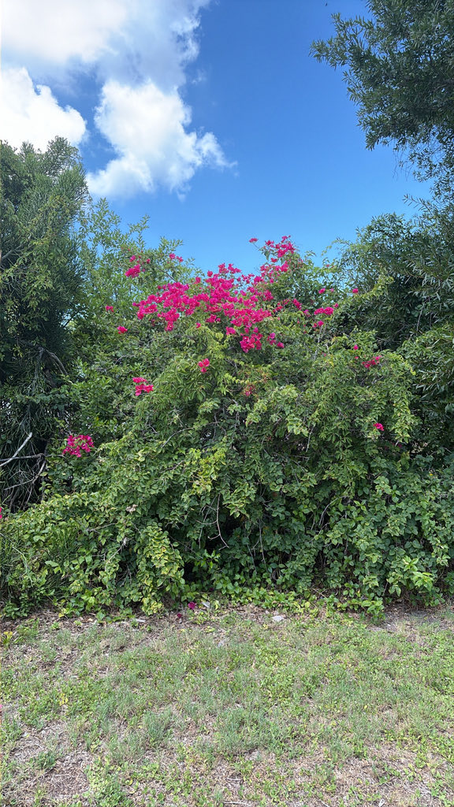

- The showy color is not the flower — it is the bract, a modified leaf surrounding the tiny actual flower inside. The real flowers are inconspicuous cream-white tubes at the bract center. The papery texture of the bracts is why the plant is called paper flower around the world.
- The genus is named for Louis Antoine de Bougainville, who led the first French circumnavigation of the globe (1766-1769) — though he did not collect it himself. That is credited to Jeanne Baret, who joined the expedition disguised as a man as the naturalist's assistant and became the first woman to sail around the world.
- She gathered the plant at Rio de Janeiro in 1767; it was named for the commander, who stayed with the ships.
- It blooms on stress, not pampering. Lean soil, full sun, and deep but infrequent water bring out the bracts; rich soil, heavy nitrogen, and frequent watering give green growth and thorns instead.
- The spines are serious — the stems are armed with recurved thorns that catch and hold, and the plant climbs by hooking these thorns over branches and supports. Useful as a barrier planting; memorable if met unexpectedly.
- One of the most widely cultivated ornamental vines in the world, with hundreds of cultivars in colors from white to magenta to orange to bi-color.
Non-native. Native to eastern South America — Brazil and neighboring Bolivia, Peru, and Argentina. Member of Nyctaginaceae — the four-o'clock family, same as the park's own Four-o'clock plant (PSBP-00106).
- The color that makes bougainvillea famous is not in its flowers. The true flowers are small cream-white tubes, carried three at a time; what surrounds them are three large papery bracts — modified leaves — in magenta, purple, red, orange, or white depending on the plant. That papery texture is the source of the worldwide nickname paper flower.
- The plant carries one of botany's better travel stories. The genus honors Louis Antoine de Bougainville, commander of the first French circumnavigation of the globe (1766-1769), but he was running the expedition and did not gather it.
- The collection is credited to Jeanne Baret, who had signed on as assistant to the voyage's naturalist, Philibert Commerçon, disguised as a man because French naval rules barred women from the ships. She collected the vine at Rio de Janeiro in 1767 and, by the voyage's end, became the first woman to sail around the world.
- The plant was named for the commander; the person who found it went largely unrecognized for two centuries.
- The park grows two species. This one, Great Bougainvillea, has hairy, faintly velvety stems and leaves and stout recurved thorns; the Lesser Bougainvillea (Bougainvillea glabra, PSBP-00093) is nearly smooth — glabra means hairless — and tends to stay more shrub-like.
- Both climb the same way, hooking their thorns over anything within reach, and in warm climates an unchecked vine will scramble well up into a tree.
- Bougainvillea also rewards a hands-off gardener. It flowers hardest under mild stress — full sun, lean soil, and infrequent deep watering. Too much water or nitrogen, or too much shade, and it answers with leaves and thorns instead of color.
Bees and butterflies visit the flowers (the small tubular ones inside the bracts). The dense thorny growth provides protected nesting structure for small birds — the thorns that make it uncomfortable to handle also deter predators from reaching nests.
Tiny, cream-white, tubular, three per cluster, surrounded by three large colorful bracts. The bracts are the visual display.
The color display. Papery, in magenta, purple, red, orange, white, or bi-color depending on cultivar. Long-lasting.
Recurved, sharp, along the stems. Handle with gloves.
Vigorous climbing or sprawling vine, 15 to 40 feet. Woody with age. Can be trained as a shrub with pruning.
The papery colored bracts in clusters are unmistakable. Look inside for the tiny cream flowers at the bract center. Handle stems with caution — the recurved spines are effective. The park's two bougainvilleas are easy to tell apart up close: this Great Bougainvillea has hairy, slightly velvety stems and leaves, while the Lesser Bougainvillea (Bougainvillea glabra, PSBP-00093) is nearly smooth.
The thorns are the main hazard — they cause mechanical injury — and the sap can cause dermatitis in sensitive people.
It isn't a food plant, though the bracts are occasionally used as a tea. It isn't seriously toxic.
The ASPCA doesn't list it as toxic to dogs or cats; eating a lot of bracts may cause mild stomach upset, vomiting, or diarrhea.

- © Ruby Meador (CC-BY-NC), via iNaturalist